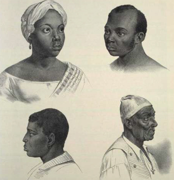

|
Long before the Thirteenth Amendment to the U.S. Constitution, ratified in 1865,
declared free millions of women, men, and children who had long been enslaved
throughout the American South, hundreds of thousands of black, brown, and tan
people already lived outside the bounds of slavery. In fact, by 1860, more than
260,000 free people of color lived in the South and had either personally
experienced slavery or had at least one African antecedent who had been
enslaved. Freedom was rare, however, and it was both limited and costly.
Although more than 260,000 free people of color resided in the South at the
outbreak of the Civil War, they constituted a small minority compared to the 8
million white people and the 4 million slaves who lived there as well. Of the
small percentage of nonwhite southerners who enjoyed some degree of freedom, a
majority (53 percent) were women. The preference that freedom afforded women was
no accident. It was, in part, an expression of the division between the
productive and reproductive roles of slave women and men. How those women, once
free, defined their lives can be understood only within the framework of the
relations of race, class, and gender in the region.
The experiences and identities of free women of color directly reflected the
South's system of slavery, a system that changed over time and place. During the
formative years of the colonial period, when slave codes were not yet
established, many Africans who had been brought to the South lived and worked
not as free white people but not exactly as slaves, either. As the seventeenth
century drew tO a close, however, and as white southerners increasingly
committed themselves to Black slave labor, fewer and fewer displaced Africans
were able to attain, or maintain, their non-slave status. Thus, most women who
found themselves enslaved during the final years of the seventeenth century
remained enslaved into the eighteenth century.
The natural-rights ideologies championed during the American Revolution provided
opportunities for circumscribed freedom to most people who had been enslaved in
New England and the mid-Atlantic region, but even such limited freedom was not
extended to slaves in the South. Although a few southern slaveholders took the
revolutionary ideals to heart and emancipated some slaves, the overwhelming
number of people of African ancestry remained in bondage following the
revolution. Southern slaveholders staunchly defended their constitutionally
confirmed right to own people as if they were property. In their minds, property
rights far outweighed any slave's presumed right to personal liberty. The first
federal census of 1790 confirms the southern commitment to slavery. Of the
nearly 700,000 Africans and their descendants who lived in the South, only
slightly more than 32,000 were not enslaved.
At the end of the eighteenth century, and early into the nineteenth century, the
free nonwhite population of the South increased as a result of several factors.
A trend toward manumission in the Upper South--Maryland, Delaware, Kentucky,
Virginia, Tennessee, and even North Carolina--began to redefine the character of
the community of free people of color living there. Revolutionary ideology did
influence a slave's chances for freedom in the Upper South, but, for the most
part, the increase was more a consequence of the declining viability of a
plantation economy in the region than of any broad-based ideological change.
Slaveholders in the Upper South found that it was cheaper to hire workers-Black
or white-than to buy and support slaves. In addition, fugitive slaves often
disappeared into the anonymous and transient ferment of port cities such as
Baltimore or the sparsely populated countryside-thus swelling the region's free
nonwhite population.
Slaveholders in the Lower South--Alabama, Georgia, Louisiana, Mississippi, and
South Carolina--were less tolerant of the fledgling abolitionist movement than
were slaveholders in the Upper South and, thus, were less likely to manumit
their slaves. Of primary importance, however, was the fact that slavery remained
a viable, productive labor system in the Lower South, one that encouraged
slaveholders to maintain full hegemony and rigid control over the slave
population. Most of the increase in the number of free people of color in the
Lower South resulted from natural increases as well as the influx of tens of
thousands of free nonwhite refugees from Santo Domingo in the wake of the slave
revolution and thousands more who suddenly found themselves on U.S. soil as a
result of the Louisiana Purchase of 1803 and the Adams-Onis Treaty of 1820
through which Spain ceded Florida to the United States.
White Southerners, especially in the Lower South, who felt threatened by the
increasing number of free people of color and the growing abolitionist movement
in the North, began to close, even more securely, the already narrow gateways to
freedom. Between 1810 and 1860, southern states strengthened their laws to
preclude any further increases in the number of free people of color, and
through expulsion, emigration, or re-enslavement schemes they ever attempted to
eliminate the free population entirely.
Of course, non-slave status never guaranteed real freedom or equally for those
who had moved out of slavery. Free people of color knew that in Southern society
race was presumed to signify condition and that their collective existence
challenged the inherent assumptions of that world. Freedom made them few
promises. Instead, it alternately confirmed the legal advantages that
distinguished their condition from that of slaves, while, at the same time, it
reinforced the racial stigma that bound them to slaves. Finding themselves
neither enslaved nor wholly free, free people of color recognized that they were
anomalous to the social, economic, and legal realities of the slave system. They
were a group apart from both Black slaves and free whites.
Personal liberty was not only tenuous for these free people of color; it was
relative as well. Among other things, gender influenced freedom. Because the
legal status of a child always followed that of the mother, a daughter or son of
a slave woman was inescapably defined as a slave, whereas the child of a free
woman-be she Black, white, or Native American-was always free, regardless of the
father's status. Thus, the child of a free man of color and a slave woman
remained the property of her owner. Therefore, the slaveowner who manumitted a
male slave freed only one individual, but if a slaveowner freed a woman, all of
her future offspring and, as a matter of course, the entire female line also
would be free. For this reason, manumitting a female slave had a long-term,
multiple effect on the Black population, slave and free, as well as social,
economic, and demographic implications that far outweighed the consequences of
freeing a man.
Despite such implications, women were more likely to be freed than men,
primarily because the white population viewed women as less threatening to the
social order. Slave women seemed less frightening than men, who were feared for
their physical strength and for their presumed ability-and tendency-to foment
rebellion. Therefore, slaveholders considered women of color who lived outside
the boundaries of slavery less of a potential social threat than men and, thus,
were more likely to allow women their freedom through will, deed, self-purchase,
or legislative act.
In addition, most former slaves were urban dwellers, and most nonwhite urban
dwellers in the South were women. The predominance of women in the urban slave
population was the product of a twofold phenomenon. First, urban slaveholders
feared the proximity of large numbers of male slaves. Riots and violence, as
well as the relative freedom that urban slaves experienced in comparison to
plantation slaves, encouraged urban slaveowners to limit the number of men in
the urban slave population. Second, urban slaveholders were less likely to
manumit men, and they sought greater control over those who already were free.
Southern legislatures enacted laws specifically designed to curtail the number
and autonomy of free men of color. Urban occupational patterns also contributed
to the predominance of women among that population, as a large number of women
were needed to perform the countless domestic chores of the urban environment.
A recognizable and coherent community appears to have provided protection and
social opportunities for free women of color in the cities, community support
systems such as churches and benevolent societies that generally were not
available to free women of color in rural areas of the South. Indeed, the
advantage of living in urban areas is reflected in the total number of free
people of color who lived in cities. For instance, in 1860, while approximately
85 percent of the white and 95 percent of the slave population lived in the
countryside, more than 72 percent of free people of color lived in cities, the
majority of whom were women.
Urban slave women sometimes managed to purchase their own freedom as well as
freedom for their children. A portion of the urban free nonwhite population had
been freed from plantation slavery, but most who managed to achieve their
freedom did so in an urban setting, in such cities as the nation's capital,
Baltimore, Richmond, Charleston, Savannah, Mobile, and New Orleans.
The character of urban slavery also advanced the opportunity for freedom. Slaves
in the cities often worked and lived away from their owners, who were paid a
regular weekly or monthly sum from their wages. Therefore, slave women who
managed to establish lives beyond the direct day-to-day influence of their
owners were more likely to be able to save money toward purchasing their
freedom, at least in those jurisdictions where self-purchase remained an option.
However, few slave women actually were able to accumulate enough money for that
purpose, even in an urban setting.
Slave women were more likely to secure their freedom through familial
relationships. Some mothers and grandmothers worked their entire lives to
purchase the freedom of their children and grandchildren, while fathers and
husbands sometimes purchased the rights to their daughters or wives for the
purpose of manumitting them. On rare occasions, men who were still enslaved
worked to free the women they loved at the expense of their own freedom, but
most men who manumitted women already were free themselves. Free men of color
who were legally married to slave women (in the few jurisdictions that allowed
slaves to marry), or who cohabited with them, and even white men who were
committed to their de facto wives and their racially mixed offspring sometimes
negotiated their freedom.
Women also were somewhat more likely to be freed by masters or mistresses for
sentimental reasons. Slave women who served as domestics, cooks, nurses, and
nannies formed relationships with their owners that demonstrated at best love
and caring and at worst fear and hatred. Such relationships, however
complicated, sometimes resulted in freedom for those women who lived most
intimately with their owners and who therefore had greater opportunity to
negotiate the terms of their emancipation. Also, some white slaveowners
manumitted elderly servants who were no longer economically productive.
Access to freedom, as well as its conditions and limitations, also differed by
region. Because plantation slavery had become a less viable economic institution
in the Upper South by the early nineteenth century, owners in that region were
less likely to hold as tightly to their slaves as were slaveholders in the Deep
South. Also, more slave women in the Upper South enjoyed quasi-freedom -living
as if they were free without going through the process of legal manumission-than
did slave women in the Lower South, and others were likely to achieve their
freedom when they or their owners chose to test it.
Notwithstanding considerable inflexibility toward emancipation, one part of the
Lower South nonetheless accommodated the most thriving population of free people
of color in the slave states. These were the racially mixed descendants of
African, French, and Spanish settlers of colonial Louisiana and Florida who
identified themselves as free Creoles of color. Louisiana's Creoles of color
became U.S. residents following the 1803 Louisiana Purchase. Then, in 1812 and
1821, the Creoles of color in Spanish west Florida joined their Louisiana
counterparts. By 1860, the approximately 20,000 Creoles of color who lived in
Louisiana, southern Alabama and Mississippi, and northwest Florida were distinct
from both slaves and whites. Unlike many of the free people of color elsewhere
in the South, who were viewed by their white neighbors as slaves without
masters, free Creoles considered themselves, and were acknowledged by the
dominant white population as well as by slaves as, an intermediate caste.
Consequently, Creoles of color occupied a special status in their communities.
Unlike their counterparts in the rest of the South, free Creole women and men of
color, for the most part, were socially and legally recognized as free citizens.
The law protected their legal status, and members of the white community, to
whom they often were related, ensured their social standing.
Throughout most of the antebellum period, free Creole women of color, and free
Creole men, retained the right to buy and sell property, including slaves. They
were able to marry, sue in court, and acquire an education-until both fear of
slave uprisings and paranoia drove white leaders to limit their freedom.
Increasingly after 1850, white politicians in Louisiana, Alabama, and Florida
passed laws forbidding free people of color to transact business without white
guardians. As a result, many free Creoles of color left the region for France,
Cuba, even Mexico, where they hoped to find a racial climate that was similar to
the one they formerly had known along the Gulf Coast. Despite the hardships
confronting those who chose to remain, however, most educated their children and
worshipped without interference.
|

These drawings of a creole family date to the 1820s
|
Creole women of color celebrated and protected their distinct cross-cultural
heritage, and as mothers they transmitted that special heritage to their
children. Because of their unique social identity, free Creoles of color were
closely tied to both their Creole white and their Black slave kin and neighbors.
As part of an intermediate caste, however, free Creoles of color usually
segregated themselves into communities where they spoke only French or Spanish
and remained true to the Roman Catholicism that the early settlers had brought
with them to the New World.
The Catholic Church itself reinforced the special identity of the Creoles of
color. Viewing itself as the moral protector of women, the church continued to
support Creole women of color even as racism deepened through the antebellum
South. From the early days of settlement, the Catholic Church had educated free
women of color; consequently, while many white southerners remained uneducated,
many Creole women of color received some formal education. The skills of
reading, writing, ciphering, and sewing that the church taught these women,
while at the same time imparting religious doctrine, reinforced what their
mothers and grandmothers had told them about the social roles of women. Thus,
free Creole women of color instructed their daughters as to the proper behavior
of daughters, sisters, wives, and mothers, roles that had been established by
both African and Western traditions.
Beyond the Gulf Coast region, however, most free women of color in the rural
plantation South lived in areas where they were always a small minority. In
spite of their apparent isolation and small number, however, these women knew
themselves to be the daughters, sisters, wives, and mothers who anchored family
and community networks. In Georgia's plantation belt, for example, free people
of color made up only about one-half of 1 percent of the total population, but,
their number notwithstanding, they were firmly linked to one another by extended
interlocking families characterized by conjugal, sanguinal, and co-residential
ties.
In addition, as was the case with many free Creoles, free people of color in the
plantation belt maintained familial links with white southerners. Strict social
sanctions that sought to control the sexuality of white women suppressed all but
a few liaisons between slave, or free, men of color and white women. Public
outrage aimed at the white women and free or slave men of color who became
parents of racially mixed children was so severe that few entered into such
alliances. If discovered, the white woman would have been ostracized, and any
man of color could expect to be brutally punished. Thus, although such liaisons
did occur, they were rare, or at least very secretive. Nonetheless, a few free
people of color in the antebellum South did have white mothers.
No such censures applied to slave, or free, women of color who bore the children
of white men, or who even cohabited with them. Laws forbade such relationships,
but law enforcement agents, and the community in general, usually ignored
liaisons between women of color and white men. For one thing, free women of
color often lived in white households or worked side by side with white men who
could easily exploit them sexually. The social and legal institution of slavery,
which assigned ownership of slave women's bodies to their owners, officially
denied slave women the right to reject any sexual overtures and, by extension,
also denied the presumption of virtue to free women of color, who often had to
deal with the sexual advances of white men. Such advances were often unsought
and unwelcome, but few free women of color had the resources to avoid them.
Even those free women of color who willingly cohabited with white men were
marginalized by laws that prohibited interracial marriage, and their children
were penalized as well. These laws were almost always adhered to by religious
and civil authorities, who refused to sanctify or legitimize unions between
white men and free women of color. Even when such marriages were performed,
courts usually failed to recognize them, leaving the women and their children to
vie with white relatives for their share of a de facto husband and father's
affections and financial assets. On the other hand, many free women of color had
spouses and other close friends and relatives within the slave community.
Because the child of a free woman assumed its mother's more favored status, an
enslaved spouse did not endanger the freedom of that woman's offspring. In spite
of links with both the free white and the enslaved Black communities, the
preferred alliances clearly were those that tied the small number of free
families of color to one another.
Free people of color who lived in the Lower South often clustered together in
enclaves where they formed tight-knit communities. The Cane River region of
Louisiana and Chastang Bluff and Mon Luis Island in Alabama are examples of
rural communities where free people of color lived in the majority and were able
to enjoy their separate status. However, even in regions such as Georgia's rural
plantation belt, where free people of color constituted only a small percentage
of the population, they were not scattered like isolated grains of sand across a
landscape of plantations worked by slaves and owned by hostile white planters.
Rather, they usually lived near one another in small towns or on adjoining
farms. They formed loose neighborhood clusters in which they could maintain
small but protective and nurturing communities of women, men, and children who
shared the everyday rituals of life with similarly situated friends and
relatives.
In addition to family and community networks, free women of color identified
themselves through their work. A few were comfortably situated, but most had to
work to provide, or at least supplement, their family's income. Slave women
never benefited from the gender conventions associated with white women. For
instance, they usually worked as field hands alongside Black men. On the other
hand, gender conventions frequently defined the work of free women of color, who
more often performed work that was an extension of the domestic sphere. Some
were household servants while others were spinners, weavers, or dressmakers;
still others worked as independent farmers, often raising both crops and animals
and toiling at rigorous physical labor just like men.
Women who hoped to strengthen their position in the free community worked
diligently to accumulate property, and a few were astute businesswomen. Home
ownership not only offered free women of color a place to house their families;
it also extended their economic and political security. Some free women of color
centered their work within their households, turning their homes into
boardinghouses or devoting domestic space to seamstressing, laundering, or even
baking goods to peddle.
A few free women of color even owned slaves, many of whom were female and some
of whom were relatives. A free woman of color might own her mother, sister, or
even her children, whom statute or local authorities forbade her to manumit.
Other free women of color, however, like white slaveholders, owned slaves for
economic reasons, and because they generally needed slaves who shared or
supplemented their own skills, they usually owned other women.
Many free women of color were permitted to own property and transact business
with few restrictions until the early to mid-nineteenth century, when state laws
began to heap insult on injury by limiting their political, social, and economic
independence. These new laws, designed to restrict the autonomy of free people
of color, pertained to both women and men. In many jurisdictions, free people of
color had to register annually in county courthouses. They were required to
acquire and maintain legal guardians and usually could transact business only
through those guardians. Many occupations were closed to them, and they often
bore an unequal tax burden. Most jurisdictions considered them residents but
denied them the rights of citizenship. Few southern states allowed free people
of color to pursue an education, and, for the most part, criminal codes placed
free people of color on the same footing as slaves.
Of course, all women, including free women of color, lacked many of the rights
extended to white men. In most jurisdictions, married free women of color, like
married white women, were denied the right to own property and control their
children; their rights, as defined by common or civil law, were subsumed by
their husbands. However, if they were widowed or remained unmarried, they
retained rights to both property and their children. Notwithstanding the
idealization of marriage and the prevalent domestic model that defined women
within the household as wives and mothers-entirely dependent on men who were
supposed to support and protect them-many free women of color remained unmarried
and thereby maintained a fair amount of control over their own lives, and over
their own children and real property as well. Because free people of color could
enter into contracts only through the agency of a white person, and because
marriage is a contract, there is some question as to whether marriages between
free people of color would have been recognized in most jurisdictions. Many free
women of color probably stayed single because they could not marry, however, not
because they chose to remain single.
In some respects, the day-to-day experiences of free women of color changed
little after general emancipation. Most of these women celebrated when they saw
friends and family members freed, but a few regretted the loss of their own
slaves. Yet even as their lives changed very little in mundane ways, nothing
prepared them for the great social changes that would take place as a result of
the Civil War. Freedom-the status that had distanced free women of color from
female slaves-was no longer unique. Some free women of color struggled against
all odds to maintain what had been a relatively prestigious social position.
Threatened by increasing racism in the white community, and the possibility of
submersion into the larger group of former slaves, many members of this group
tried to maintain their distinct identity, but they were not generally
successful.
After the war, the dominant society defined everyone who was nonwhite, free
persons of color as well as freedpeople, as Black, and African-Americans quickly
began to coalesce into a new, all-inclusive community. That community was not
without its own social and economic diversity and stratification, however. In
many cases, those who had been free prior to general emancipation-often usually
because of nothing more than good fortune-gravitated toward the top of the newly
emerging nonwhite community. Prior to emancipation, many of them had enjoyed the
advantages of owning property, getting an education, participating in business,
and having close relationships with white people. In a disproportionate number
of cases, these people parlayed such advantages into positions in the upper
echelon of their new community-however oppressed that community might be. Thus,
during Reconstruction former free people of color became the nucleus of a
nascent African-American middle class.
Source: Darlene Clark Hine, Elsa Barkley Brown, and Rosalyn
Terborg-Penn, eds. Black Women in America: An Historical Encyclopedia,
Vol. 1 (New York: Carlson Publishing, 1993), 455-57.
|